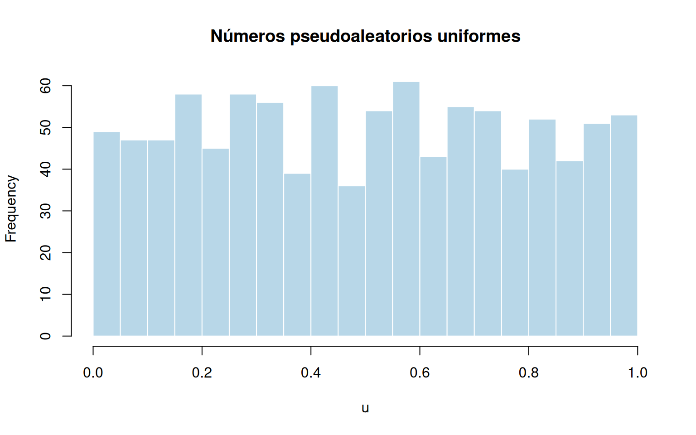
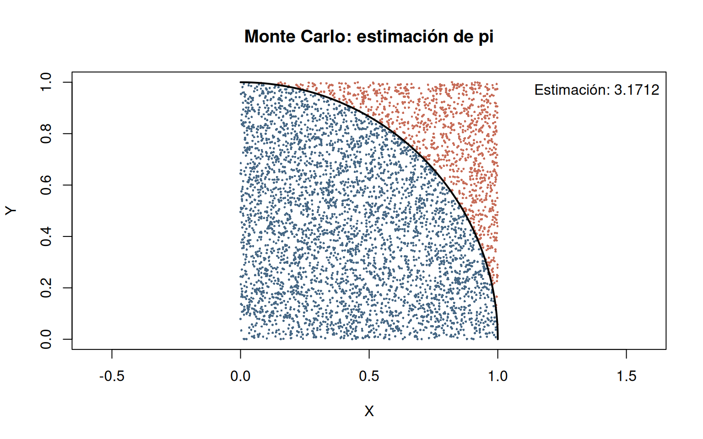
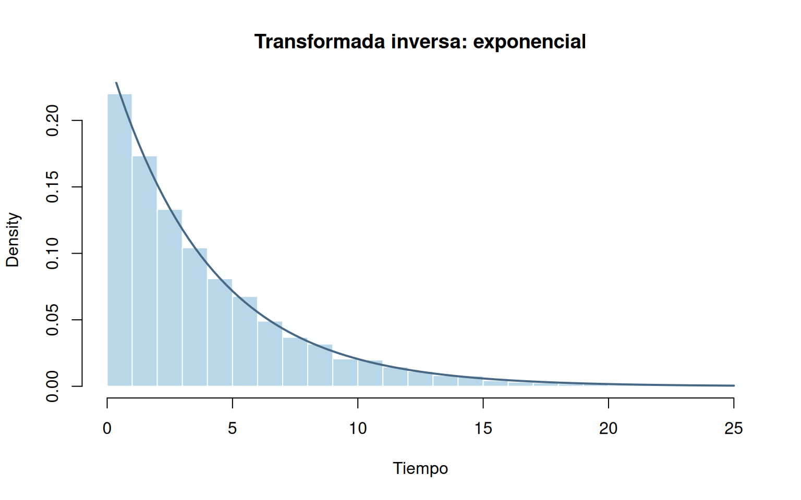
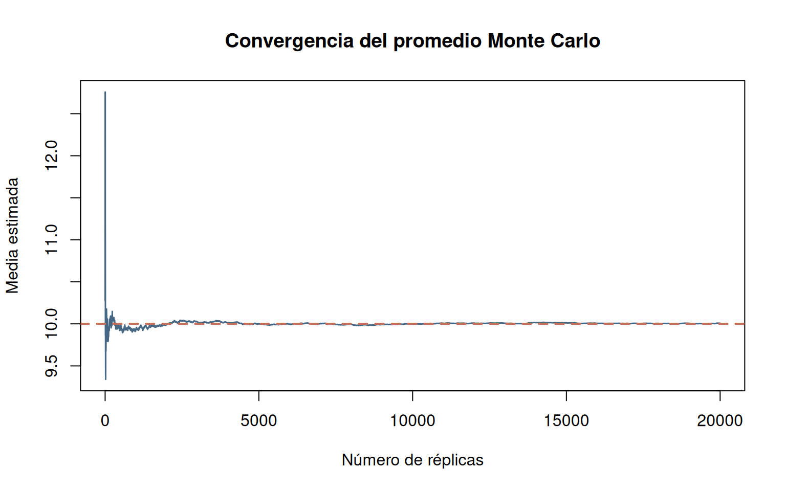

El método de Monte Carlo reúne procedimientos numéricos basados en muestreo aleatorio repetido. Su desarrollo moderno está asociado con Stanislaw Ulam, John von Neumann y los trabajos de mediados del siglo XX. No debe confundirse con una única distribución ni con una técnica exclusiva para calcular \(\pi\): es un enfoque general para estudiar sistemas con incertidumbre.
Una simulación determinista produce la misma salida al fijar sus entradas. Una simulación estocástica incorpora variables aleatorias; diferentes réplicas pueden producir salidas diferentes.
Sea \(\mathbf U=(U_1,\ldots,U_k)\) un vector de variables aleatorias y \(Y=g(\mathbf U)\) la salida de interés. Si se generan \(n\) réplicas independientes \(Y_1,\ldots,Y_n\), entonces
\[\widehat{\mu}_n=\frac{1}{n}\sum_{i=1}^{n}Y_i\]
estima \(\mu=E(Y)\). Para un evento \(A\), definiendo \(I_i=\mathbf 1\{A_i\}\),
\[\widehat{P}(A)=\frac{1}{n}\sum_{i=1}^{n}I_i.\]
Procedimiento: plantear una pregunta cuantitativa; especificar supuestos y distribuciones; generar entradas; ejecutar réplicas; calcular indicadores; estudiar precisión; interpretar resultados.
Si \(Y_i\) son independientes e idénticamente distribuidas y \(E(|Y|)<\infty\), el promedio muestral converge en probabilidad a \(E(Y)\). Esto explica la estabilización de muchas estimaciones Monte Carlo cuando crece \(n\); no implica que cada estimación sucesiva mejore necesariamente.
La desviación estándar del promedio es \(\sigma/\sqrt n\). Su estimación es
\[\widehat{SE}(\widehat\mu)=\frac{s_Y}{\sqrt n}.\]
Con \(n\) suficientemente grande y condiciones apropiadas para aplicar el teorema central del límite, un intervalo aproximado del 95% es
\[\widehat\mu\ \pm\ 1.96\frac{s_Y}{\sqrt n}.\]
Para proporciones, \(\widehat{SE}(\widehat p)=\sqrt{\widehat p(1-\widehat p)/n}\). Cerca de 0 o 1, o con pocos éxitos, conviene emplear métodos de intervalo más robustos. Duplicar la precisión aproximada exige cuadruplicar el número de réplicas.
Los computadores producen secuencias pseudoaleatorias mediante
algoritmos. runif(n) genera valores aproximadamente
uniformes en \((0,1)\);
set.seed() permite reproducir una misma secuencia con el
mismo entorno de R.
set.seed(4101)
u <- runif(1000)
hist(u, breaks = 20, col = "#B8D7E8", border = "white",
main = "Números pseudoaleatorios uniformes", xlab = "u")
Sean \(X,Y\) independientes y uniformes en \((0,1)\). La probabilidad de caer en el cuarto de círculo unitario es
\[P(X^2+Y^2\leq 1)=\frac{\pi}{4}.\]
Por tanto,
\[\widehat\pi=4\left(\frac{P(X_i^2+Y_i^2\leq
1)}{n}\right)\]
set.seed(4102)
n <- 5000
x <- runif(n); y <- runif(n)
dentro <- x^2 + y^2 <= 1
pi_est <- 4 * mean(dentro)
plot(x, y, pch = 16, cex = 0.35,
col = ifelse(dentro, "#476885", "#C76D59"),
asp = 1, xlab = "X", ylab = "Y", main = "Monte Carlo: estimación de pi")
t <- seq(0, pi/2, length.out = 250)
lines(cos(t), sin(t), lwd = 2)
legend("topright", legend = paste("Estimación:", round(pi_est, 5)), bty = "n")
Interpretación. Comparar \(\widehat\pi\) con pi y
discutir por qué una simulación de 5000 puntos no recupera
necesariamente todas sus cifras decimales.
Se lanzan dos dados equilibrados e independientes. Estimar \(P(D_1+D_2\geq 10)\) y contrastar con la probabilidad teórica \(6/36=1/6\).
set.seed(4103)
n <- 10000
suma <- sample(1:6, n, replace = TRUE) + sample(1:6, n, replace = TRUE)
c(estimada = mean(suma >= 10), teorica = 1/6)## estimada teorica
## 0.1666000 0.1666667Si \(U\sim U(0,1)\) y \(F\) es una función de distribución acumulada, la variable \(X=F^{-1}(U)\), entendiendo \(F^{-1}\) como inversa generalizada, tiene distribución \(F\).
Para una exponencial de tasa \(\lambda>0\),
\[F(x)=1-e^{-\lambda x},\qquad x\geq 0,\]
\[X=-\frac{\ln(1-U)}{\lambda}.\]
set.seed(4104)
lambda <- 0.25
u <- runif(10000)
x_inversa <- -log1p(-u)/lambda
x_r <- rexp(10000, rate = lambda)
hist(x_inversa, probability = TRUE, breaks = 40,
col = "#B8D7E8", border = "white", xlim = c(0, 25),
main = "Transformada inversa: exponencial", xlab = "Tiempo")
curve(dexp(x, rate = lambda), add = TRUE, col = "#476885", lwd = 2)
c(media_inversa = mean(x_inversa), media_rexp = mean(x_r), media_teorica = 1/lambda)## media_inversa media_rexp media_teorica
## 3.978899 3.973005 4.000000| Distribución | Generación | Parámetros |
|---|---|---|
| Bernoulli | rbinom(n, 1, p) |
probabilidad p |
| Binomial | rbinom(n, size, prob) |
ensayos y probabilidad |
| Poisson | rpois(n, lambda) |
media/tasa del conteo |
| Uniforme | runif(n, min, max) |
extremos |
| Normal | rnorm(n, mean, sd) |
media y desviación |
| Exponencial | rexp(n, rate) |
tasa |
| Gamma | rgamma(n, shape, rate) |
forma y tasa |
| Weibull | rweibull(n, shape, scale) |
forma y escala |
| Beta | rbeta(n, shape1, shape2) |
dos formas |
Advertencia: los parámetros rate y
scale no son intercambiables; revisar siempre la
parametrización del modelo.
Para \(U\sim U(0,1)\),
\[\int_0^1 h(x)\,dx=E[h(U)].\]
Ejemplo: estimar \(\int_0^1 x^2\,dx=1/3\).
set.seed(4105)
u <- runif(20000)
estimacion <- mean(u^2)
error_estandar <- sd(u^2)/sqrt(length(u))
c(estimacion = estimacion, teorico = 1/3,
limite_inferior = estimacion - 1.96*error_estandar,
limite_superior = estimacion + 1.96*error_estandar)## estimacion teorico limite_inferior limite_superior
## 0.3351419 0.3333333 0.3310199 0.3392639set.seed(4106)
z <- rnorm(20000, mean = 10, sd = 3)
promedio_acumulado <- cumsum(z)/seq_along(z)
plot(promedio_acumulado, type = "l", col = "#476885", lwd = 1.5,
xlab = "Número de réplicas", ylab = "Media estimada",
main = "Convergencia del promedio Monte Carlo")
abline(h = 10, col = "#C76D59", lty = 2, lwd = 2)
Distinguir error de Monte Carlo (variabilidad debida al muestreo) de error de modelo (supuestos, parámetros o estructura inadecuados). Aumentar \(n\) reduce el primero, pero no corrige automáticamente el segundo.
En un sistema de atención, cada réplica puede representar una jornada completa: se simulan llegadas, servicios y recursos; se calculan espera media, utilización y congestión. Si hay dependencia temporal entre eventos, deben respetarse las reglas cronológicas del sistema; generar tiempos aislados no equivale a simular una cola.
set.seed() favorece la reproducibilidad, pero
no garantiza validez del modelo?Contexto: un proceso produce artículos defectuosos con probabilidad \(p=0.04\). Un lote contiene 50 artículos. Se desea estimar la probabilidad de que existan al menos 4 defectuosos.
Modelo: \(D\sim\mathrm{Binomial}(50,0.04)\). Indicador: \(I(D\geq4)\). Referencia analítica: \(1-P(D\leq3)\).
set.seed(4111)
d <- rbinom(10000, size = 50, prob = 0.04)
c(MonteCarlo = mean(d >= 4), teorico = 1-pbinom(3, 50, 0.04))## MonteCarlo teorico
## 0.1396000 0.1391308Contexto: demanda diaria \(D\sim\mathrm{Poisson}(18)\); inventario disponible \(S=22\) unidades. El faltante diario es \((D-S)_+=\max(D-S,0)\).
Indicadores: probabilidad de faltante \(P(D>S)\), faltante esperado \(E[(D-S)_+]\) y unidades vendidas \(E[\min(D,S)]\).
set.seed(4112)
d <- rpois(10000, lambda = 18)
s <- 22
c(prob_faltante = mean(d > s), faltante_medio = mean(pmax(d-s, 0)),
ventas_medias = mean(pmin(d,s)))## prob_faltante faltante_medio ventas_medias
## 0.1450 0.4199 17.5884Contexto: la vida útil \(T\) (horas) sigue una Weibull con forma \(k=2\) y escala \(\eta=1500\). Estimar la probabilidad de que funcione más de 1200 horas.
\[P(T>t)=\exp[-(t/\eta)^k].\]
set.seed(4113)
t <- rweibull(20000, shape = 2, scale = 1500)
c(MonteCarlo = mean(t > 1200), teorico = exp(-(1200/1500)^2))## MonteCarlo teorico
## 0.5233000 0.5272924Contexto: el tiempo de servicio \(S\) (minutos) es exponencial con media 6. Estimar \(P(S>10)\) y el percentil 90.
set.seed(4114)
s <- rexp(10000, rate = 1/6)
c(prob_mas_10 = mean(s > 10), percentil90 = unname(quantile(s, 0.9)),
prob_teorica = pexp(10, rate = 1/6, lower.tail = FALSE))## prob_mas_10 percentil90 prob_teorica
## 0.1835000 13.9534525 0.1888756Precaución: este ejemplo estudia tiempos de servicio individuales; no constituye todavía una simulación de cola con llegadas y espera.
Una pérdida aleatoria \(L\) (en
millones) sigue una lognormal con parámetros meanlog = 2 y
sdlog = 0.5. Estimar la pérdida media y la probabilidad de
superar 15 millones. Diferenciar claramente pérdida esperada y cuantil
de pérdida.
set.seed(4115)
l <- rlnorm(20000, meanlog = 2, sdlog = 0.5)
c(perdida_media = mean(l), prob_superar_15 = mean(l > 15),
cuantil95 = unname(quantile(l, 0.95)))## perdida_media prob_superar_15 cuantil95
## 8.385354 0.079100 16.809976Contexto: un punto de servicio recibe clientes con intervalos entre llegadas exponenciales de media 8 minutos y tiempos de servicio exponenciales de media 6 minutos. Simular una jornada con 100 clientes.
Para el cliente \(i\), sean \(A_i\) su llegada, \(S_i\) su tiempo de servicio, \(B_i\) el inicio de atención y \(C_i\) su salida:
\[B_i=\max(A_i,C_{i-1}),\qquad C_i=B_i+S_i,\qquad W_i=B_i-A_i,\]
con \(C_0=0\). La recursión respeta el orden temporal. Para estimar incertidumbre entre jornadas, repetir jornadas completas y no tratar las esperas de una misma jornada como independientes.
set.seed(4116)
n <- 100
llegadas <- cumsum(rexp(n, rate = 1/8))
servicios <- rexp(n, rate = 1/6)
inicio <- salida <- espera <- numeric(n)
for (i in seq_len(n)) {
previo <- if (i == 1) 0 else salida[i-1]
inicio[i] <- max(llegadas[i], previo)
salida[i] <- inicio[i] + servicios[i]
espera[i] <- inicio[i] - llegadas[i]
}
c(espera_media = mean(espera), prob_esperar = mean(espera > 0),
espera_maxima = max(espera))## espera_media prob_esperar espera_maxima
## 23.82483 0.81000 96.75784Una simulación de colas puede ser un prototipo de un sistema físico. Para acercarse a un gemelo digital se requiere definir su contraparte real, incorporar datos observados, calibrar parámetros, validar indicadores y diseñar mecanismos de actualización. Monte Carlo ayuda a evaluar la incertidumbre, pero por sí solo no convierte un modelo en gemelo digital.
?runif, ?rpois,
?rweibull, ?set.seed.